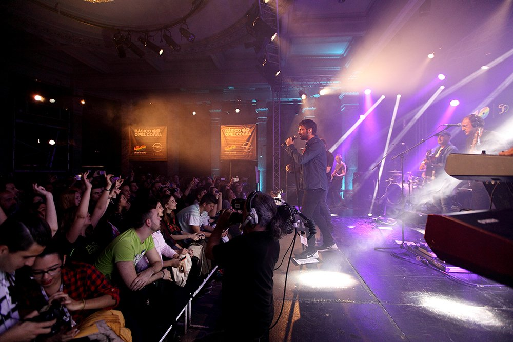

Estopa sigue repartiendo canciones #Desdecasaconmúsica y estrena el videoclip de “Despertar”
Bajo ese hashtag llega un nuevo vídeo grabado en confinamiento y compartido con todos desde este 5 de mayo. El tema es Despertar, otra de las canciones incluidas en Fuego, su último trabajo. Como hicieron con el reciente clip de Corazón sin salida, los hermanos Muñoz y el resto de la banda participan con sus instrumentos desde sus respectivos domicilios para redondear una generosa dosis de buena onda a pesar del encierro. Despertar es uno de los 12 temas incluidos en ese Fuego lanzado en octubre, un álbum inspirado, poderoso y luminoso que destila variedad musical y rítmica. Con sus crónicas tan personales como costumbristas, los de Cornellá exhiben el bagaje de quien creció cantando a Camarón, se contagió del heavy-rock de Extremoduro y se apuntó a la corriente arrabalera del hip-hop. El álbum, con el que celebran 20 años de carrera, entró directamente en el número 1 en ventas, En sus primeros compases, Despertar podría ser una canción de Enrique Urquijo o Antonio Vega, pero el suave pop del arranque deriva rumba y rock cuando la canción explota. Se convierte así en un tema trepidante con el sello Estopa, ese que les mantiene naturales, sin fisuras y sin disimulos. Y sin esconder sus sentimientos, aunque padezcan como todos los rigores del encierro. Los combaten #Desdecasaconmúsica, y qué mejor manera.